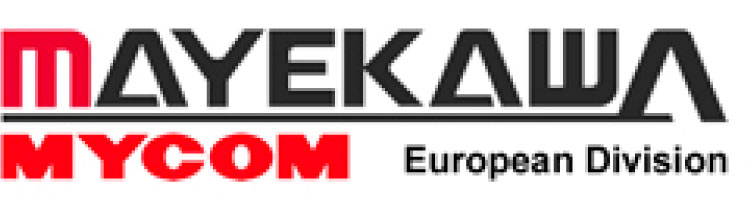
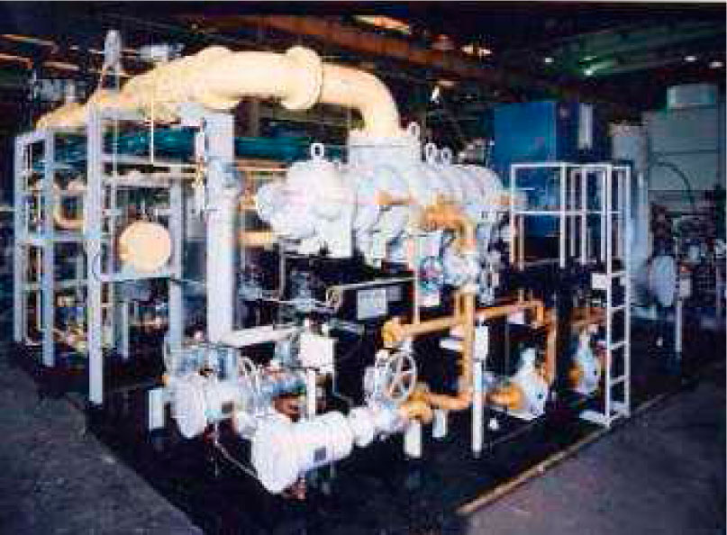

Mayekawa Chemical Process Europe is specialised, amongst other, in applications involving gas and helium compressors
- Mayekawa Chemical Process Europe is the European division of Mycom Mfg Co (compressor manufacturing, Japan) specialised in petrochemical, oil & gas and helium applications involving Mycom oilflooded screw compressors, for gas compression or refrigeration purposes.
- Mayekawa provides engineering and production of complete skid-mounted compressor units, according to the customer's specifications.
- Mycom compressors have been used succesfully in scientific helium applications like CERN.


Contact Person
Mr Paul Janssens
email: paul.janssens@mycomeurope.com
fridolin.michel@esat.kuleuven.be
jens.verbeeck@esat.kuleuven.be
tel: +32 2 7579075
fax: +32 2 7588755
http://www.mayekawa.eu/
Leuvensesteenweg 605
1930 Zaventem
Belgium
Contact Person
Mr Paul Janssens
email: paul.janssens@mycomeurope.com
fridolin.michel@esat.kuleuven.be
jens.verbeeck@esat.kuleuven.be
tel: +32 2 7579075
fax: +32 2 7588755
http://www.mayekawa.eu/
Leuvensesteenweg 605
1930 Zaventem
Belgium